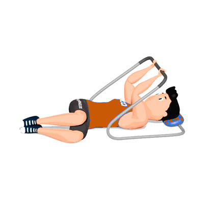

Abdominal Oblíquo no Aparelho

Exercício para fortalecimento e hipertrofia da região abdominal, reto abdominal e oblíquos, com enfoque no oblíquo lateral. Indicado a praticante de musculação nível iniciante e intermediário. Auxilia a moldar a região abdominal, fácil execução.
Ficha Técnica
Tipo: Musculação
Grupo Muscular: Abdome
Aparelho: Nenhum
Músculos: Nenhum
Como realizar
- Deite sobre um colchonete;
- Segure os pegadores com auxílio das mãos;
- Joelhos flexionados e pernas posicionadas para uma das laterias do corpo, juntamente ao quadril, realize a flexão do tronco com a força dos músculos abdominais;
- Eleve os deltoides, respeitando o movimento do aparelho;
- Músculos contraídos por alguns segundos, retorne à posição inicial e realize a sequência de repetições determinada;
- Para finalizar, troque a posição para o lado oposto e repita os movimentos.
 RC STORE
RC STORE